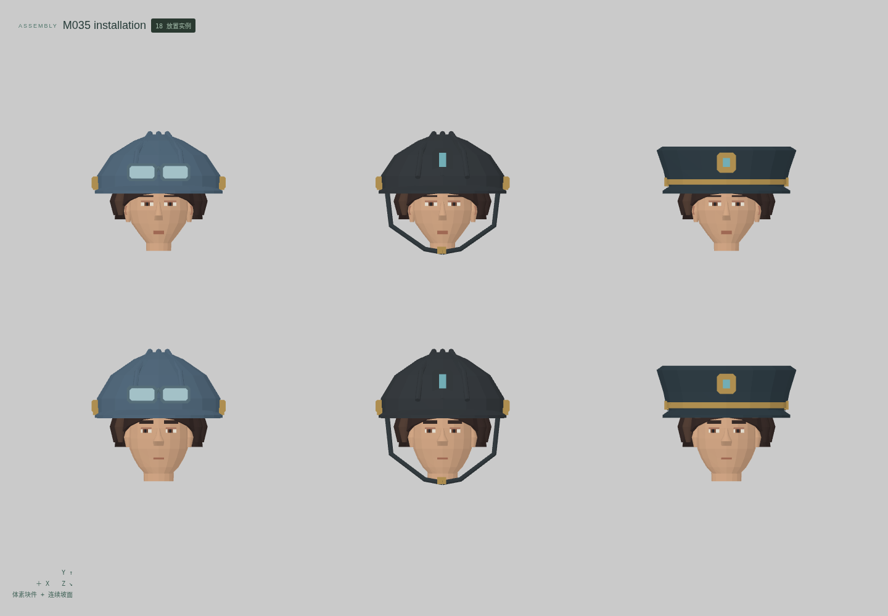
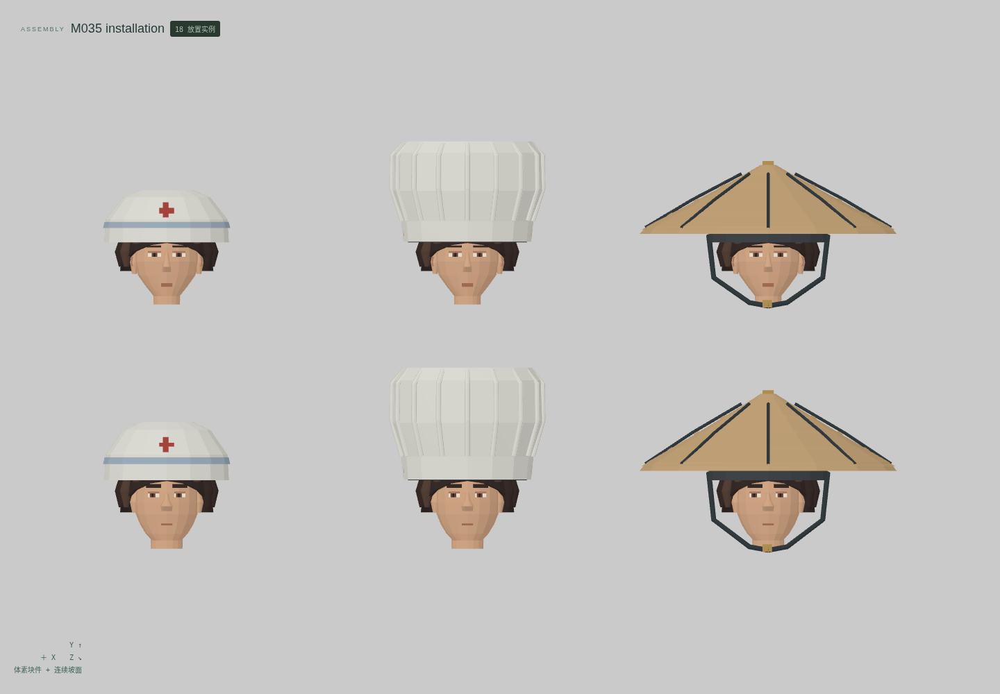
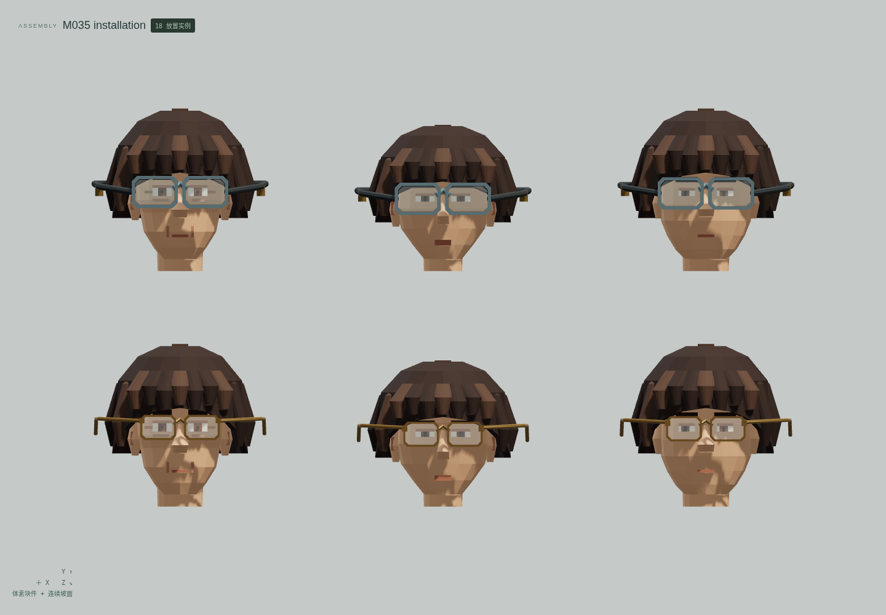
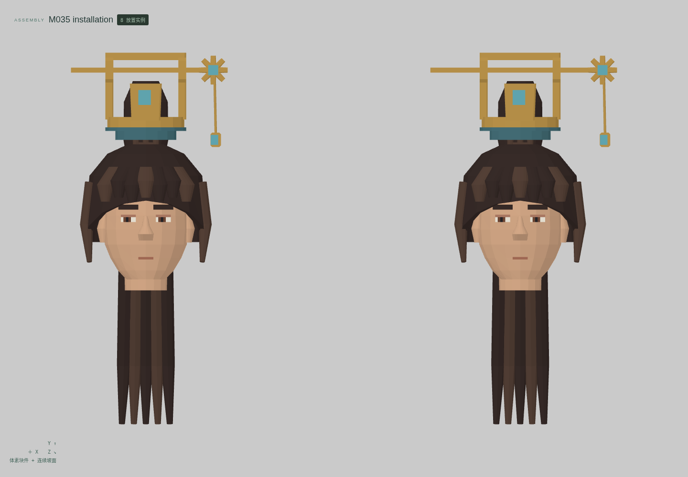
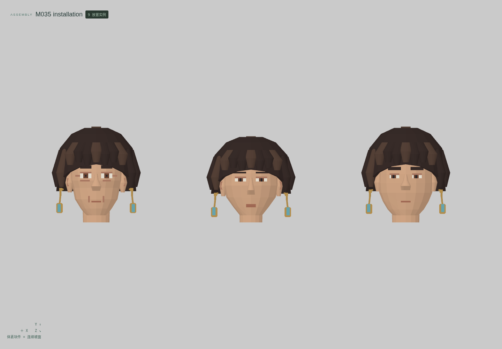
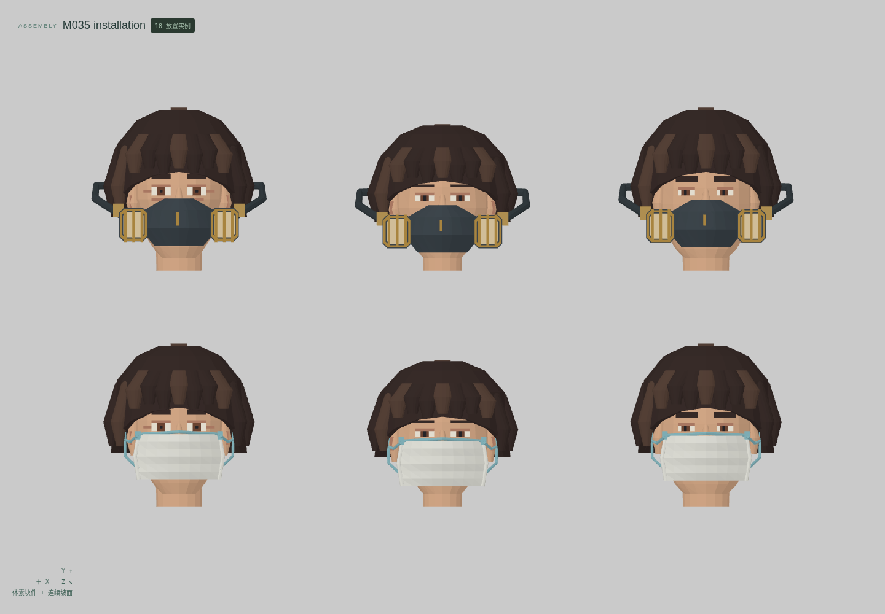
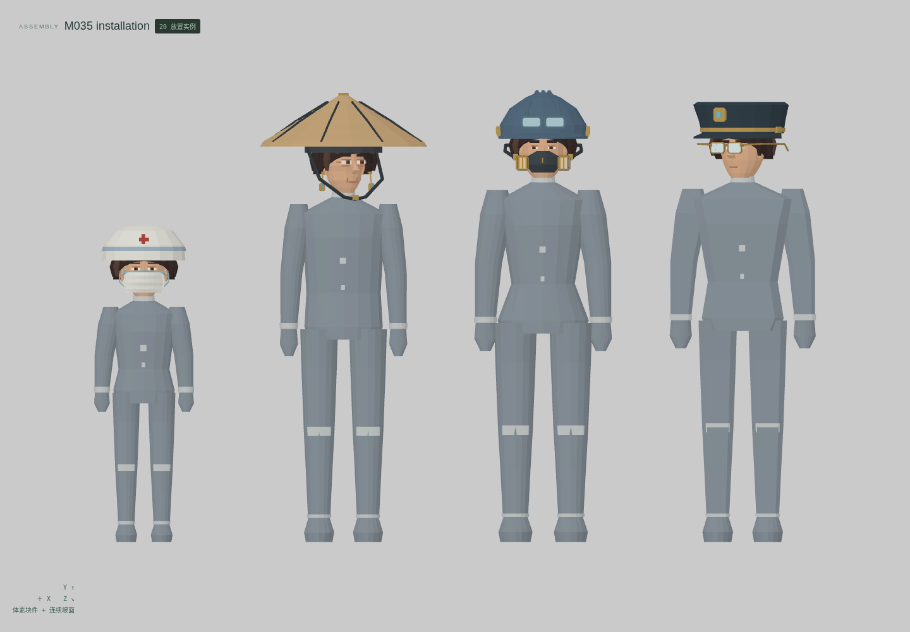

<!doctype html><meta charset="utf-8"><style>*{box-sizing:border-box}body{margin:0;background:#e2e4df;color:#263c34;font:20px system-ui}header,footer{padding:26px 34px}h1{margin:0 0 12px;font-size:32px}main{display:grid;grid-template-columns:1fr 1fr}figure{margin:0;border:1px solid #bec5bd;background:#eceeea}img{display:block;width:100%}figcaption{padding:14px 24px}figure:last-child{grid-column:1/3;margin:0 25%}</style><header><h1>云山 M035 · 帽盔、眼镜与面罩穿戴组合</h1>12 个独立母版 · 29 个形态 · 7 组真实编辑器装配 · 正面适配与材质视图<br>最小细节体素；帽檐、镜框与服饰曲面使用连续网格</header><main><figure><figcaption>警务制帽 / 守卫护盔 / 工坊防护帽</figcaption></figure><figure><figcaption>草编斗笠 / 厨房帽 / 医护帽</figcaption></figure><figure><figcaption>独立眼镜 / 防护眼镜 · 三年龄</figcaption></figure><figure><figcaption>长簪 / 短簪 · 实际发冠通道</figcaption></figure><figure><figcaption>成对耳饰 · 三年龄</figcaption></figure><figure><figcaption>医护口罩 / 工坊防尘罩 · 三年龄</figcaption></figure><figure><figcaption>四组全身穿搭 · 刚性随头姿态</figcaption></figure></main><footer>头部及身体来自另存的既有母版，不重复计数。转头为单关节刚性姿态；没有饰品摆动、镜片度数、防护模拟或原游戏绑定。技术候选，人工美术验收 0。</footer>